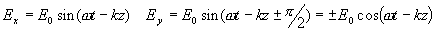
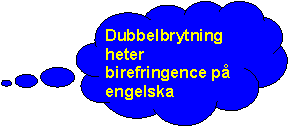

Lite eftertanke visar att ett villkor för att ljus ska vara linjärpolariserat är att nollställen för x och y-komponenter inträffar samtidigt
. (Annars skulle E-fältet peka i x-riktningen när y-komp har nollställe och vice versa). De fasskillnader som är OK är alltså 0 eller p (testa med matlabsnutten på huvudsidan). Ett viktigt specialfall inträffar då fasskillnaden är � p /2 och ampliduden i x- och y-riktning är lika. Ljus som utbreder sig i z riktningen kan då skrivas
Räknar man ut längden av E-vektorn (Pythagoras sats) så ser man att denna är E0 (alltid och överallt, dvs oberoende av t och z). Detta ska tolkas som att E vektorn med konstant belopp byter riktning. Testa med
denna lilla matlabsnutt (Sätt Ey/Ex=1 och faskillnad = pi/2) så ser man hur E-vektorn ändras med tiden.När vi fortfarande har fasskillnad �pi/2, men olika amplitud får vi i stället en E-vektor som roterar och varierar i belopp. Detta kallas elliptiskt polariserat ljus.
I det verdervärdiga fall att amplituderna är olika och fasskillanden inte är ett heltag ggr pi/2 får vi ellipiskt polariserat ljus med ellipsaxlar i andra riktningar än koordinataxlarna.
Prova gärna i matlabbsnutten men räkna bara på det om du har en uttalat trigonometrimasoschistisk läggning.
Hur åstadkommer man nu alla dessa fasskillnader och annat? (I den så kallade verkligheten, inte i matlab)
Man använder sig av material som är dubbelbrytande dvs har olika brytningsindex för olika polarisationsriktningar. Sådana material har varit kända sedan antiken och det första man slås av när man tittar genom dem är att man ser två bilder. Med ett polaroidfilter är det lätt att konstatera att de bägge bilderna har olika polarisationsriktning.
I den enklaste typen av dubbelbrytande material är en polarisationsriktning avvikande i brytningsindex och kallas då för den optiska axeln. Alla riktningar vinkelrätta mot den (dvs ett helt plan av riktningar) har samma index, vilket kallas det ordinära brytningsindex, no. det avvikande kallas extraordinärt index, neo.